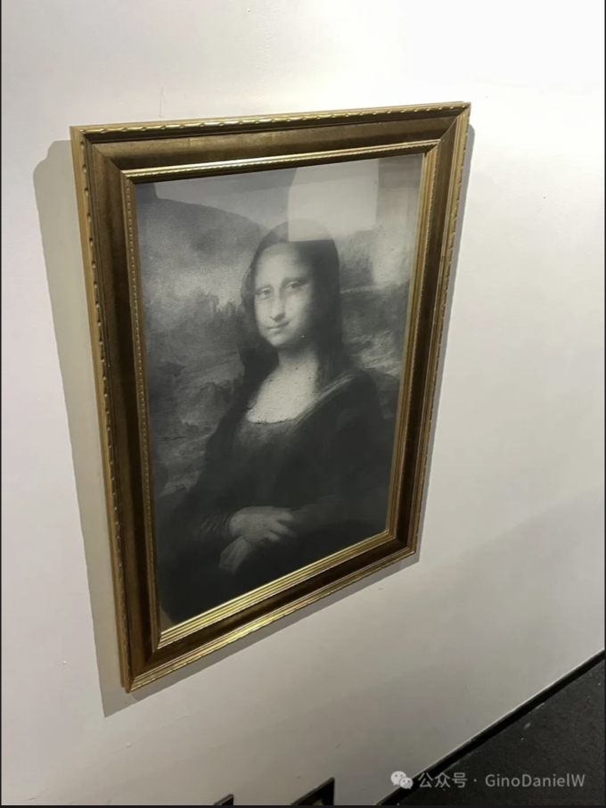
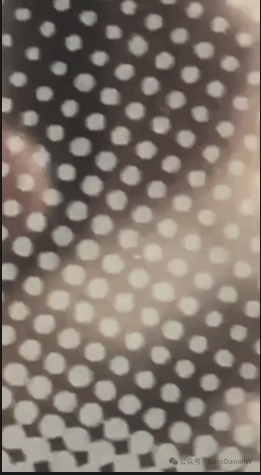
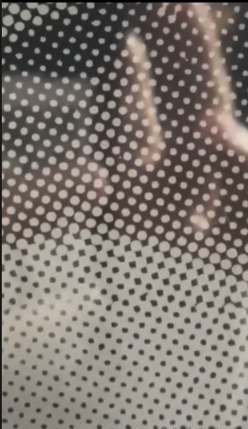
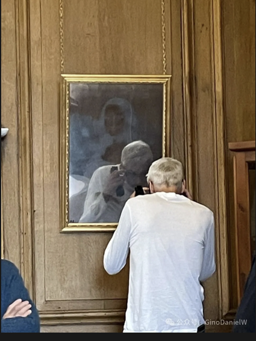
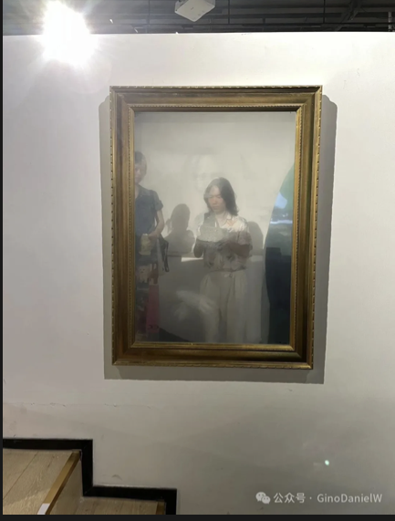

图像的幽灵 The Haunted Image
通过对丝网印刷工艺的持续改良，将印刷颜料换成镜面颜料印刷在透胶片上。我试图在这些作品抵抗一切数字化尝试的过程中，重新建立图像所承载的信息与观众之间的关系。在当今社会，图像作为最基本的信息交换媒介，早已被大量生产、过度编辑、扭曲，并被人工智能生成内容所充斥。图像所传递的信息也因此被景观化，并逐渐失去其原本的真实感。观众将无法成功拍摄这些作品；他们最终得到的，只会是一张自己正拿着手机或相机拍照的影像。通过干扰数字镜头，我试图召回那种被幽灵般遮蔽的真实，并重新连接每一个个体与其自身所面对的现实。

对于熟悉左派理论的读者来说，情境主义国际及其核心观念“景观社会”，是20世纪资本主义批判运动中不可忽视的力量。不同于同时代活跃的法兰克福学派，情境主义国际借用亨利·列斐伏尔的《日常生活批判》，将批判场域从工厂和工会转向日常生活，并通过城市游走、海报标语和事件制造，介入被资本塑造的现实。
法国五月风暴之后，组织迅速萎缩，并在四年后解散。他们及其理论本身，也像其他批判资本主义的先驱一样，被系统吸纳，成为景观的一部分。经过互联网科技革命后，情境主义国际当年的批判，在今天这个流媒体成为主要信息来源的时代仍然得以延续。虚拟空间早已成为日常生活的一部分，现实的意义仍然不来自生活关系，而是越来越多地产生于图像和视频制造出来的景观之中。
基于这种对日常生活被图像全面殖民的反思，我选择将那些在艺术史上被极端景观化、过度消费的古典母题进行再现。这些世界名画的原作语境已被剥离，并在流媒体与大众文化工业的合谋下，被降维成社交媒体上的消费背景、无限复制的衍生品，以及虚拟空间里泛滥的数字像素。观众不再注视作品本身，而是注视着“关于作品的数字景观”及其所代表的文化权威。


因此，我将这个系列命名为《图像的幽灵》。我使用镜面颜料改良丝网印刷工艺，并将其印刷在透明胶片上，使镜面反射像素取代 CMYK，成为组成图像的最小单元。最终，现场的观众和空间也会反射在镜面像素之中。在此显现的人与空间，才真正构成了图像意义的一部分，而非任何为其立法的文化权威。此时，所有试图用镜头将图像数据化的尝试，最终都只会剩下手拿摄影设备的观众。镜面像素并非对数字设备的排斥，而是直接利用镜头的自动对焦与曝光机制。数字镜头的技术逻辑与观众的物理肉身同时在镜面上留下影像，这两者不再是对立的，而是共同成为材料，构成图像最终的呈现状态。


June 2026